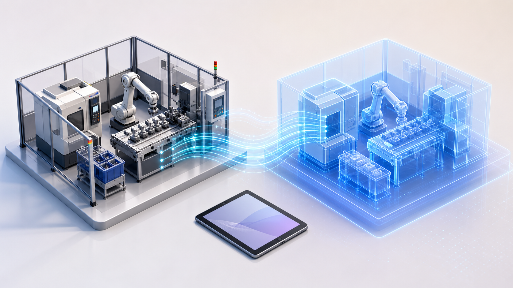

前沿技术不是“再加一个模型”：它把真实现场、虚拟仿真与工程决策连成闭环。更新于 2026-07-14。这里收录的是能帮助学习者判断方向的新闻、论文与开源资源；新闻与厂商资料不等同于独立评测，论文/预印本也不代表已经量产。
Siemens × NVIDIA：工业 AI Operating System 与 Digital Twin ComposerCES 2026 信息显示，重点已从单个模型扩展到“仿真 + 实时工程数据 + AI”的全生命周期闭环。PepsiCo 案例中，数字孪生用于提前识别潜在问题、优化吞吐。
官方新闻稿 ↗NIST 2026 智能制造 AI/ML 路线图路线图把工业数据、先进感知、数字孪生、机器人、物理信息 AI、可信/可解释 AI 与基础模型列为关键方向。对新手最重要的提醒：工业场景里“可靠、可解释、可集成”与模型效果同样重要。
NIST 原文 ↗ OmniAD（2025）：检测 + 细粒度理解将工业异常检测与视觉/文本推理统一起来。它对应一个真实问题：模型不仅要圈出异常，还要帮助工程师理解异常与工艺知识的关系。
arXiv ↗少样本多模态异常检测（2025）面向“缺陷样本很少”的工业现实。核心思想是从少量训练样本中提取共性结构，提升新场景适应性。适合与第二讲的视觉模型一起阅读。
arXiv ↗ STAR（2025）：让时序基础模型处理离散状态工业数据不只有温度、压力这类连续数值，还有阀门开关、设备模式等离散状态。该工作关注如何让基础模型更适应这种混合数据。
arXiv ↗Foundation Models for Time Series: A Survey（2025）系统梳理时序基础模型在预测、异常检测和分类中的进展。建议先学完第三讲的 LSTM/Transformer，再用它搭建完整知识地图。
arXiv ↗ Anomalib：工业视觉异常检测工具箱覆盖训练、推断、基准测试和边缘部署。适合把第二讲的“视觉模型”变成一个小型质检实验。
GitHub ↗工业异常检测论文与数据集地图持续更新的论文、数据集和代码索引。适合在选模型前先确定：你的问题更接近分类、检测、分割还是无监督异常检测。
GitHub ↗Uni2TS：通用时序预测 Transformer开源的通用时序预测模型项目。适合用于理解“预训练时序模型”如何被迁移到设备/能耗预测等任务。
GitHub ↗